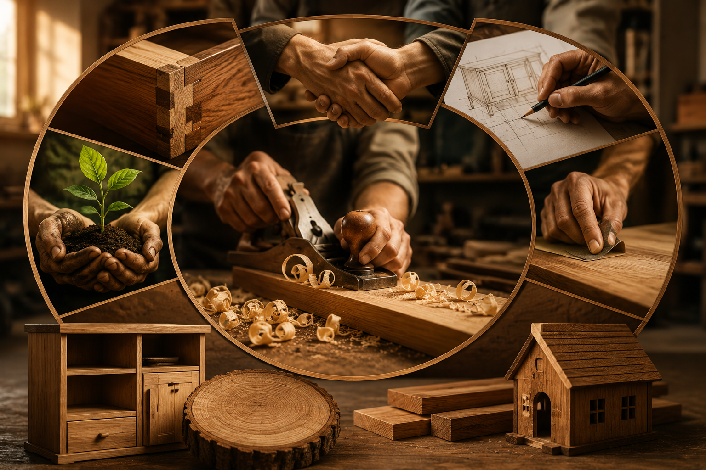

"Transformando la madera en arte"
Carpintería Tetos nació en junio del 2022 con el objetivo de ofrecer trabajos de carpintería de alta calidad y diseños personalizados para hogares y negocios. Desde nuestros inicios, nos hemos esforzado por combinar la tradición artesanal con técnicas modernas para crear productos duraderos y funcionales.
Misión: En Carpintería Tetos nuestra misión es diseñar, fabricar y ofrecer productos de carpintería de alta calidad que satisfagan las necesidades de nuestros clientes, combinando creatividad, funcionalidad y durabilidad en cada proyecto. Nos comprometemos a brindar un servicio personalizado, escuchando las ideas de cada cliente para convertirlas en realidad mediante trabajos elaborados con dedicación, responsabilidad y atención a los detalles. Buscamos crear espacios más cómodos, elegantes y funcionales, utilizando materiales de calidad y técnicas que garanticen resultados excepcionales
Visión: En Carpintería Tetos aspiramos a ser una empresa líder en el sector de la carpintería, reconocida por la calidad de nuestros productos, la innovación de nuestros diseños y la excelencia en el servicio al cliente. Buscamos convertirnos en la primera opción para quienes desean muebles y proyectos de madera personalizados, destacándonos por nuestra responsabilidad, profesionalismo y compromiso con la satisfacción de cada cliente. Nuestro objetivo es crecer de manera constante, incorporando nuevas técnicas, herramientas y tendencias que nos permitan ofrecer soluciones modernas y funcionales Asimismo, queremos contribuir al desarrollo de nuestra comunidad, generando confianza a través de un trabajo honesto, sostenible y de alta calidad, manteniendo siempre nuestra pasión por la carpintería y el respeto por el medio ambiente.
Valores:
- Calidad :
Cuidamos cada detalle para garantizar acabados excelentes.
- Honestidad :
Trabajamos con transparencia y responsabilidad.
- Creatividad :
Diseñamos soluciones únicas y personalizadas.
- Compromiso :
Cumplimos con los tiempos y acuerdos establecidos.
- Respeto al medio ambiente :
Promovemos el uso responsable de los recursos naturales.
- Trabajo en equipo :
Colaboramos para lograr los mejores resultados.
